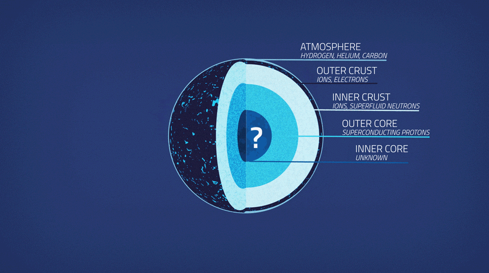

| Ein Neutronenstern ist sehr simpel aufgebaut. Die Atmosphäre besteht aus Hydrogen, Helium und Carbon. Die äußere Kruste besteht aus Ionen und Elektronen. Die innere Kruste besteht aus Ionen und suprafluide Neutronen (Neutronen, die ohne Reiben fließen bzw. nie bremsen). Der äußere Kern besteht aus supraleitende Protonen (Protonen, die ohne Widerstand leiten bzw. der Stromkreis bricht niemals ab). Was im inneren Kern von einem Neutronen steckt und bislang unklar. |  |